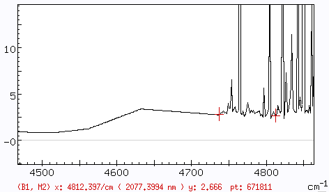
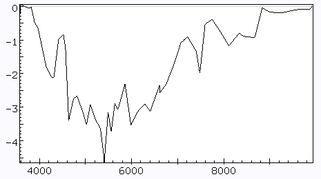
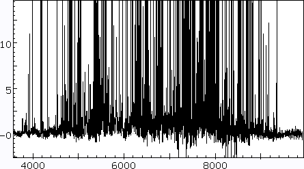

To do this, go through the file placing markers as shown. The aim is
to roughly draw a line through the continuum. When you have finished,
multiply the result by -1.,
and saven the result to
the scratch directory. This is what it will look like:

To correct the original file, first
create the file and then run
extended addn,
n being the number of the entry in the scratch
directory. Then
close both datain
and dataout and re-open the newly-created file as datain. This
is what an extended bin on the file looks like:

The continuum is now down to the level of the noise.